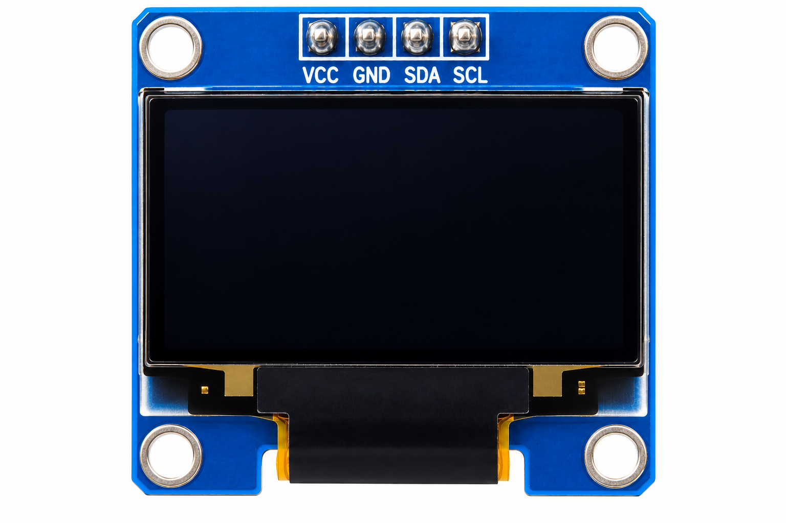

Wireless_Force_Measurement_Display.ino

Wireless Force Measurement Display

To develop a wireless force measurement experiment using an ESP32 development board, FSR402 Force Sensitive Resistor, SSD1306 OLED and red LED. The system measures relative force through a voltage-divider circuit, classifies the reading into LOW, MEDIUM and HIGH levels, and displays information on an OLED and Wi-Fi dashboard.
The Wireless Force Measurement Display demonstrates force-sensitive resistance, analog voltage measurement, ADC conversion, LED indication, OLED interfacing and wireless data monitoring.
The FSR402 changes its electrical resistance when pressure is applied to its sensing area. A 10kΩ fixed resistor forms a voltage divider with the FSR402.
The voltage-divider output is connected to GPIO34 of the ESP32. As applied force increases, the FSR402 resistance typically decreases, causing the voltage at GPIO34 to increase in the specified divider arrangement.
The ESP32 measures this voltage using its 12-bit ADC. Ten readings are averaged and mapped to an approximate relative percentage from 0 to 100%.
The system displays the calculated percentage and a LOW, MEDIUM or HIGH classification on the SSD1306 OLED. A red LED connected to GPIO2 activates when the mapped percentage reaches 25%.
The ESP32 also connects to Wi-Fi and provides an HTTP dashboard displaying sensor percentage, ADC value, force classification and LED state.
| Force Classification | Relative Percentage | Red LED |
|---|---|---|
| LOW | 0–24% | OFF |
| MEDIUM | 25–59% | ON |
| HIGH | 60–100% | ON |
| Parameter | Configuration |
|---|---|
| Controller | ESP32 Development Board |
| Force Sensor | FSR402 |
| Fixed Resistor | 10kΩ |
| Analog Input | GPIO34 |
| LED Output | GPIO2 |
| LED Resistor | 220Ω |
| OLED | SSD1306 128×64 |
| OLED SDA | GPIO21 |
| OLED SCL | GPIO22 |
| ADC Resolution | 12-bit |
| Web Server | Port 80 |
| Serial Monitor | 115200 baud |
The displayed percentage is a relative value calculated from the ADC output. It does not directly represent force in newtons, kilograms or grams. Accurate force measurement requires calibration of the FSR402 and consideration of its nonlinear response.

Main microcontroller for sensing and Wi-Fi communication.
Changes resistance according to applied force.

Forms the voltage divider with the FSR402.

Displays relative force percentage and classification.

Indicates MEDIUM and HIGH force classifications.

Limits current through the red LED.

Used to assemble the force-sensing circuit.

Used to connect the hardware components.
Install the ESP32 board support package and U8g2 library in Arduino IDE.
| Component | Connection |
|---|---|
| FSR402 Terminal 1 | 3.3V |
| FSR402 Terminal 2 | GPIO34 divider junction |
| 10kΩ Resistor — One End | GPIO34 divider junction |
| 10kΩ Resistor — Other End | GND |
| OLED Pin | ESP32 Connection |
|---|---|
| VCC | 3V3 |
| GND | GND |
| SDA | GPIO21 |
| SCL | GPIO22 |
| Component | Connection |
|---|---|
| GPIO2 | One end of 220Ω resistor |
| Other end of 220Ω resistor | Red LED anode (+) |
| Red LED cathode (−) | GND |
| Parameter | Value |
|---|---|
| FSR402 Signal | GPIO34 |
| Voltage-Divider Resistor | 10kΩ |
| LED Signal | GPIO2 |
| LED Resistor | 220Ω |
| OLED SDA | GPIO21 |
| OLED SCL | GPIO22 |
| OLED I²C Address | 0x3C, module-dependent |
| LOW | Below 25% |
| MEDIUM | 25% to below 60% |
| HIGH | 60% and above |
| LED ON | 25% and above |
| Serial Monitor | 115200 baud |
GPIO34 is an ADC1 input-only pin, making it suitable for analog measurement while Wi-Fi is enabled.
The divider must use 3.3V and GND; do not apply a voltage exceeding the ESP32 input limit to GPIO34.
Install the 220Ω resistor in series with the red LED. GPIO2 is a boot-strapping pin, so verify the LED connection does not interfere with board startup.
Avoid applying excessive force or sharp objects directly to the FSR402 sensing area.

The FSR402 changes resistance when force is applied to its sensing surface.
The FSR402 and 10kΩ resistor convert resistance variation into a measurable voltage at GPIO34.
The ESP32 converts the analog voltage into a digital reading. The program averages ten ADC measurements and maps the result to a relative percentage.
The mapped percentage is classified into LOW, MEDIUM or HIGH. The classification thresholds follow the supplied experiment.
The LED is OFF for LOW. It turns ON from the MEDIUM threshold of 25%.
The OLED provides local force indication. The browser dashboard shows the same relative percentage and classification over Wi-Fi.
ESP32 Experiment · Code Review
Select a topic to highlight its complete matching source-code section. Copy Code copies the full Arduino sketch.
Click an explanation tab to highlight its actual matching code section.
The FSR402 is a Force Sensitive Resistor. Its resistance typically decreases with increasing applied force.
The FSR402 and 10kΩ resistor produce an analog voltage that changes with sensor resistance.
GPIO34 is an ADC1 input. The ESP32 reads the analog divider voltage as a digital value.
FSR sensors are nonlinear. For force values in physical units, establish a calibration relationship using known loads.
The ESP32 hosts a dashboard and a JSON endpoint. A browser refreshes the sensor information approximately once per second.
Answers: GPIO34; 10kΩ; GPIO2; GPIO21 and GPIO22; 25%; no.
Try It: Apply different pressures to the FSR402 and compare the raw ADC reading, relative percentage, OLED classification and LED state.
Starting Wireless Force Measurement Display... OLED initialized. Connecting to Wi-Fi... Wi-Fi connected. IP Address: 192.168.x.x Web server started. Force monitoring started.
ADC: 819 | Force: 20% | LOW | LED OFF ADC: 1843 | Force: 45% | MEDIUM | LED ON ADC: 3071 | Force: 75% | HIGH | LED ON
FORCE METER 20% LOW
FORCE METER 45% MEDIUM
FORCE METER 75% HIGH
| Dashboard Element | Expected Output |
|---|---|
| Force Percentage | Relative 0–100% indication |
| Classification | LOW / MEDIUM / HIGH |
| Progress Bar | Updates according to mapped ADC percentage |
| ADC Value | Raw averaged ADC reading |
| Red LED | ON / OFF |
| Device IP | ESP32 local network address |

The Wireless Force Measurement Display experiment demonstrates relative force monitoring using an FSR402, 10kΩ voltage divider and ESP32 ADC.
The program classifies the ADC-based percentage as LOW, MEDIUM or HIGH, displays the value on the SSD1306 OLED, and activates the red LED at 25% or above.
The Wi-Fi dashboard provides remote observation of the relative force percentage and current operating status.